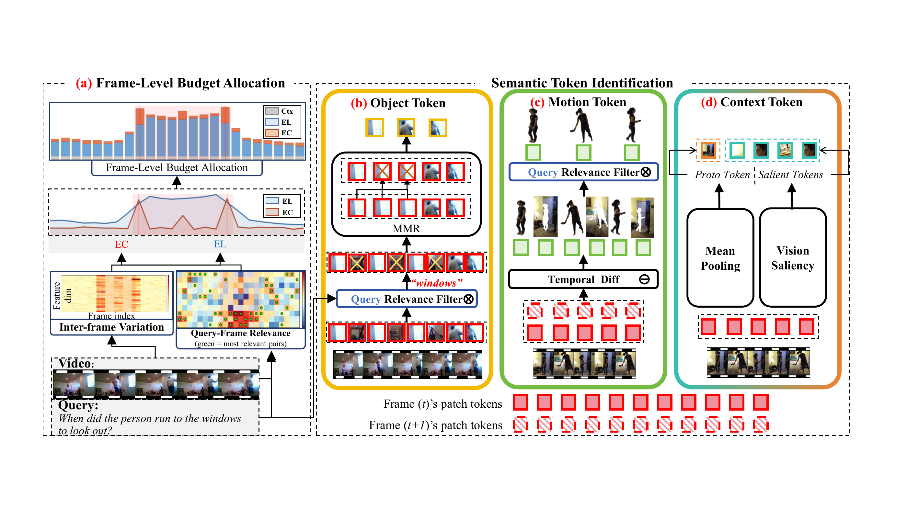
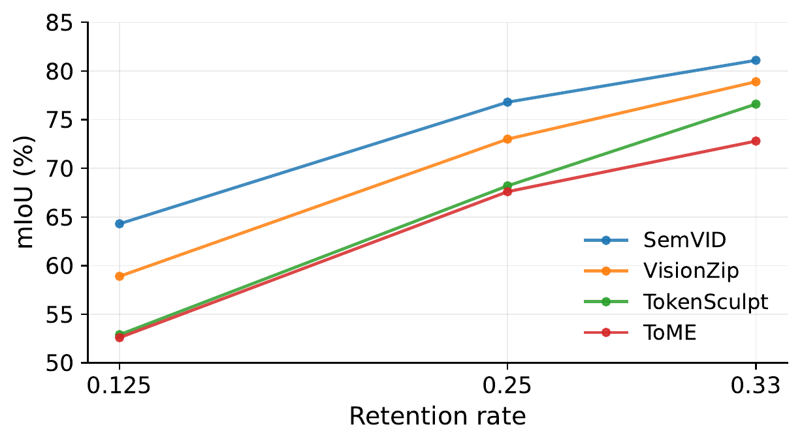
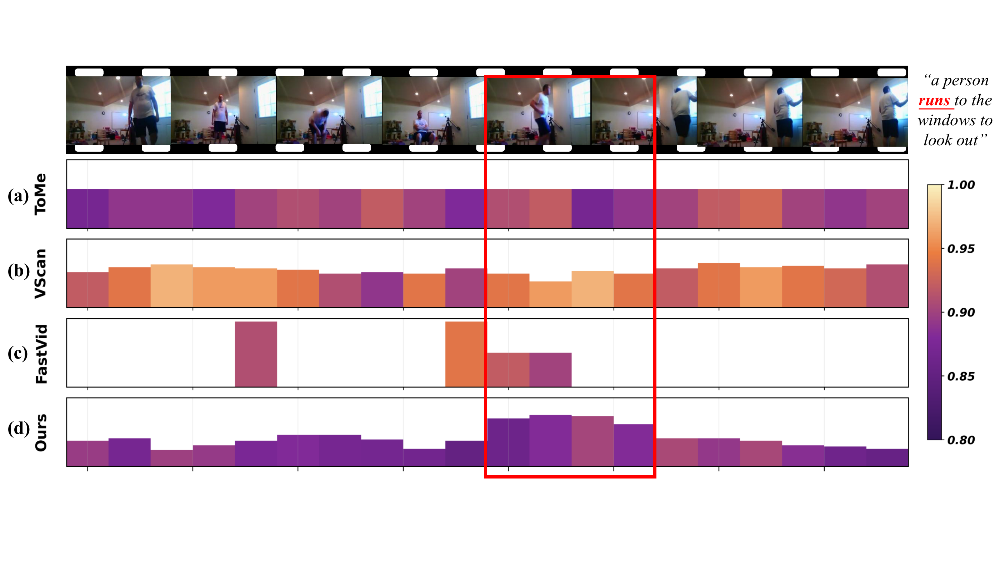
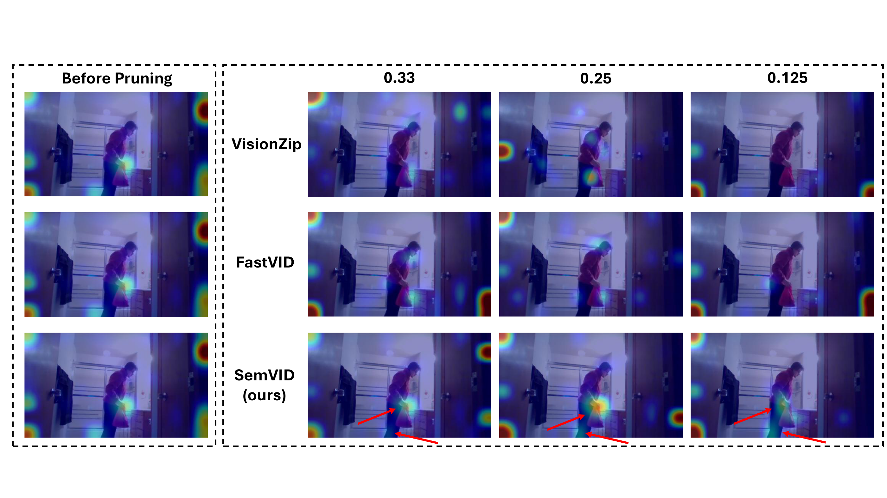

Redundancy can erase boundaries
Visually similar frames may contain brief onset or offset cues that determine the correct temporal window.
Semantic Evidence Allocation for Training-Free Token Pruning in Video Temporal Grounding
1 University of Warwick 2 University of Amsterdam
Method
SemVID is training-free. It first distributes the token budget across frames using query evidence and inter-frame variation, then retains complementary object, motion, and context tokens.

Object tokens
Query-to-patch similarity locates relevant objects; maximal marginal relevance avoids spending the budget on near-duplicates.
Motion tokens
Local feature differences reveal changing regions, while query-aware filtering keeps the changes useful to the event.
Context tokens
Per-frame prototypes and saliency anchors maintain a minimum evidence path through otherwise low-budget frames.
Main results
Qwen3-VL-4B on ActivityNet Captions with only 12.5% of visual tokens.
SemVID mIoU
38.49 95.4% of the full-token baselinePrefill latency
217.7 msfrom 1263.4 msVideo FLOPs
4.8 Tfrom 59.4 TFLOPsCharades-STA
49.8989.0% retainedToken budget
12.5%training-free pruningAccuracy–efficiency trade-off
FastVID is marginally faster, but SemVID recovers +5.33 mIoU by preserving the evidence chain.
| Method | mIoU ↑ | Prefill ↓ | Speedup ↑ |
|---|---|---|---|
| Full tokens | 40.33 | 1263.4 ms | 1.0× |
| VisionZip | 19.89 | 895.2 ms | 1.4× |
| FastVID | 33.16 | 209.7 ms | 6.0× |
| SemVID | 38.49 | 217.7 ms | 5.8× |

What the ablations say
Replacing FastVID’s uniform allocation with SemVID’s semantic budget raises Charades-STA mIoU from 35.98 to 48.88.
Inside the evidence chain
The analysis makes the mechanism visible: where tokens are allocated, whether intermediate frames stay connected, and where the model’s attention lands after pruning.


Reproduce the analysis
The repository includes the paper’s Evidence Retention and Connectivity Strength implementation, plus the evaluator hooks needed to export per-sample attention metrics.
Beyond temporal grounding
Citation
Please cite our paper and star the repository. It helps others discover the project.
@article{li2026keeping,
title = {Keeping the Evidence Chain: Semantic Evidence
Allocation for Training-Free Token Pruning in
Video Temporal Grounding},
author = {Li, Jiaqi and Zheng, Shuntian and Shen, Yixian and
Huang, Jia-Hong and Lu, Xiaoman and Ni, Minzhe and
Guan, Yu},
journal = {arXiv preprint arXiv:2603.05663},
year = {2026}
}